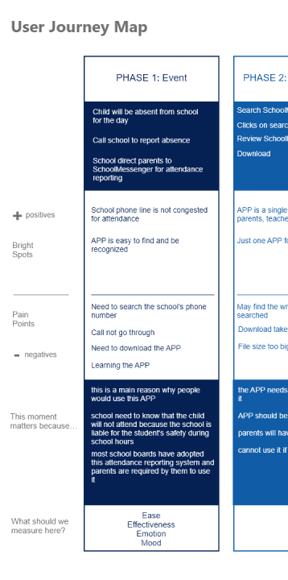
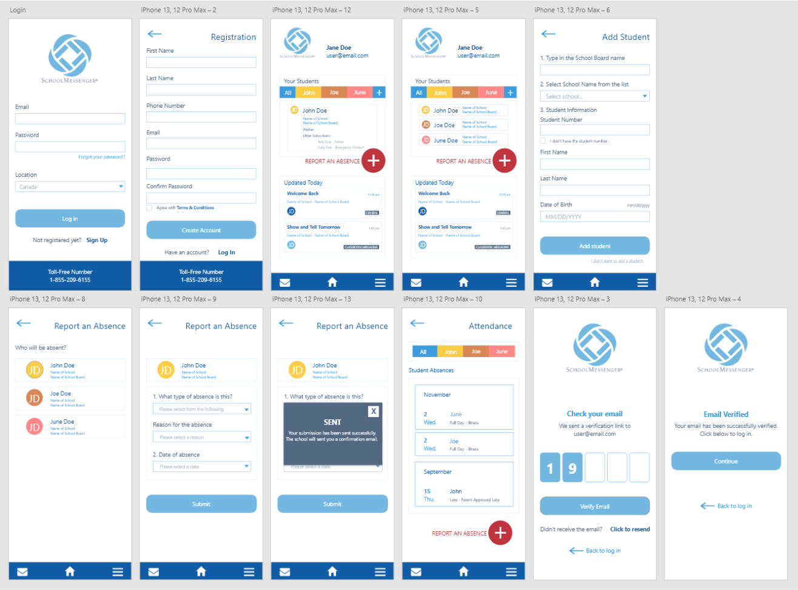

.png)


Unlocking Inclusivity: School Messenger App Redesign
Imagine a school communication app designed to simplify life for
parents,
teachers, and schools. Sounds like a dream, right?
But what if this app left some
parents feeling like they were
locked out of the conversation, even when they
wanted to be part of
it? That's where my School Messenger App redesign journey
began. Fueled
by personal frustration and a determination to improve, I set out to
make his app into a more inclusive and user-friendly tool for all
types of families
that is truly accessible and engaging for everyone!
How might we revamp the School Messenger
App to be the ultimate inclusivity champ?
We're talking about making it a communication powerhouse for all
parents and
guardians, no matter how their family is shaped.
The Problem
School Messenger App is the bridge between schools and parents, a digital hotline for information exchange, updates, and notifications. Its mission? To help parents stay engaged with their kids and schools like a pro.
But wait, there’s a plot twist! It’s not as inclusive as it should be.
It currently lacks inclusivity for non-traditional families, limiting access to parents whose email addresses are not registered within the school system, even if they are listed as secondary or emergency contacts for a child. This limitation is based on the primary contacts listed during school registration.
In a world where families come in all shapes and sizes, the current app's design and functionality doesn’t quite get the memo. This oversight creates a barrier for many parents and guardians, hindering the app’s goal of fostering parental engagement.
Why do I care?
Picture this: I'm juggling the everyday chaos of parenting in a modern and blended family setup. Now, let's throw in an app that sometimes acts like the gatekeeper of an exclusive club. It’s frustrating being locked out of vital school communication just because my email didn't match some list for some of my children.
And I’m not alone. Many families, like mine, don't fit the cookie-cutter mold. We deserve a communication tool that embraces our diversity and makes life easier, not more complicated - because every parent deserves a stress-free school experience, whether you're in a traditional family, a blended one, or somewhere in between.
Research: Unlocking Insights
To tackle the challenges ahead, I embarked on a journey of exploration
using the KWHL table.
It's a bit like putting on my detective hat to uncover the mysteries
of the School Messenger
App's user experience.
I scoured Google Play Store reviews, paying attentions to common
themes and user concerns.
I also engaged in a semi-structured email interview with a participant
who had previously
expressed dissatisfaction with the School Messenger APP. While the
conversation wasn't
recorded, we set up a digital Q&A session. I
also delved into the academic world with some
good old literature reviews.
What do I KNOW?
There is a correlation between parental engagement and student
achievement and success.
Many services are designed with the nuclear family structures in
mind.
Non-traditional families experience difficulties access
information and
services pertaining to their children.
WHAT do I need to find
out?
Why is it so difficult for parents from non-traditional family
structures
access information and services for and to their children?
How do parents feel when they cannot use specific functions
related for
the child? Or if a child is not registered as part of their family
cohort?
HOW will I find the info?
APP reviews online of parents or teachers who use the APP
Interviews with a parent of a non-traditional family
Observe a parent using the APP using POEMS Observation Framework
Literature reviews on non-traditional families and parental
school engagement
What have I LEARNED?
Student success is correlated with the level of parental
engagement
to school. However, there is an imbalance with sending and
receiving school communications from both teachers and parents.
Parents are feeling overwhelmed with all the communications and
messages and teachers are finding that often parents are not aware
of
them.
There are limitations and restrictions placed on parents and
guardians of
certain types of family structures that prevents them from
engaging with
the school.
Research Triangulation Summary
Why is it so difficult for parents from non-traditional
family structures access information and services
for and to their children?
observations
When the parent who is not the
primary caregiver to the child try
to access information on that
child, she has difficulty in
doing
so because the system does not
recognize her credentials as a
parent to that child.
interview
“I can only do it for one girl and
not both. And for me to add my
stepdaughter in, I need to
use
my email address, but the school
has my email address. But the
app does not let me. The other
option doesn’t work either."
Quote from participant
literature reviews
Family structures have had a
major shift in its diversity within
the last two decades. However,
the long-standing educational
and other social structure are
not reflective of this societal shift
and often leaves out families
who do not fit the traditional
definition of family (Thompson,
2022; Baker et al., 2016).
Convergence
With an increase in diversity within the Canadian population, family
status are no longer limited to
its traditional definition of nuclear family, but expanded to
include other family structures. Non-
traditional families
should not be made to feel unwelcomed or discriminated in the social
areas of
services and facilities, including education for their children. Yet
very little attention has been paid
to address issues of accessibility and inclusivity related to family
status and services. Thus, parents
and families from these structures continue to experience barriers
within a society built with
heteronormative notions, which prevents them from living a quality
family life.
Ideate: Let’s Get Creative
Fueled by my research and my own, let's say, "passionate
frustration" from feeling excluded
in crucial communication. I crafted three distinct personas, each
representing a unique set of
constraints:
Permanent constraint
Meet Marc, his information is not listed in his children’s school record system,
and therefore,
denied communications.


.png)


Permanent constraint
Meet Marc, his information is not listed in his children’s school record system,
and therefore,
denied communications.


Permanent constraint
Meet Marc, his information is not listed in his children’s school record system,
and therefore,
denied communications.

.png)
.png)



Design: Crafting the User Experience
To address the challenges posed by varying levels of
persona constraints and make the
SchoolMessenger APP more inclusive, the following solutions have been
included in the
redesign:
Design: Crafting the User Experience
To address the challenges posed by varying levels of
persona constraints and make the
SchoolMessenger APP more inclusive, the following solutions have
been included in the
redesign:


Findings from user testings

High Fidelity
Using the low-fidelity design as my base and incorporating all the necessary changes based
on the feedback received, I adjusted the high-fidelity design accordingly. To ensure that the
redesign maintains a cohesive look with the current app design, I drew inspiration from the
existing design elements and color scheme.


.png)
Design: Crafting the User Experience
Next up, I worked on some pseudocodes in JavaScript, HTML, and CSS. Think of pseudocode
as the blueprint for how you want your program to run, kind of like drawing the game plan
before hitting the field. It's a nifty way to bring your design to life without diving too deep
into the coding jungle. Plus, it's like a secret language that lets designers and developers
communicate seamlessly. These pseudocodes became the building blocks for when I had to
code my final design, which I brought to life using Replit.


Expanding the Definition of Oppression
In the past, I defined oppression as something obvious and intentional. I never imagined that inaccessibility or exclusion in smartphone apps could be a form of oppression. It was a wake-up call to realize that something as seemingly mundane as a mobile app could perpetuate bias and discrimination. My background in Social Work, with a focus on Anti-Oppressive Study, gave me confidence in recognizing privilege and discrimination, but this project challenged my assumptions. I discovered that the battle against oppression extends far beyond what's tangible, reaching into the digital realm.